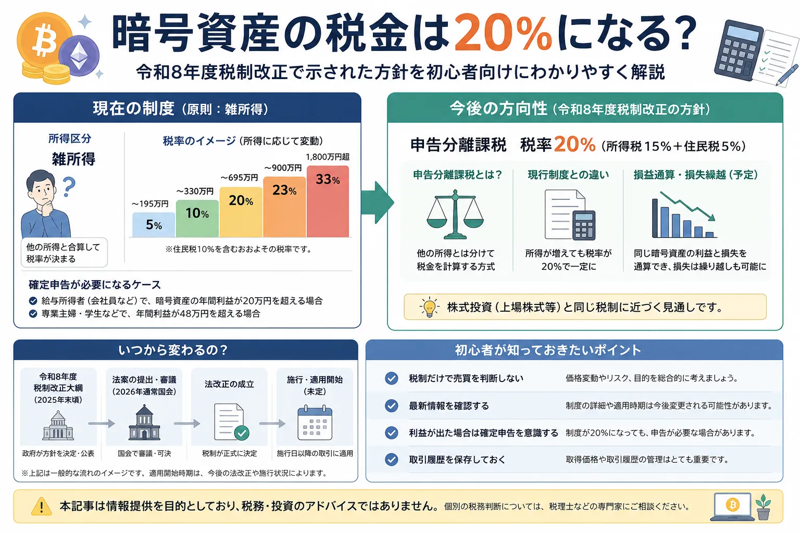

Overview
暗号資産の20％課税を最初に整理

2026年7月時点の整理：令和8年度税制改正大綱で示された暗号資産課税の見直しは、その後、2026年3月31日に税制改正法が成立・公布されています。一方、20％の申告分離課税が実際に始まる時期は、前提となる改正金融商品取引法の施行時期に連動します。そのため、現時点では「制度は成立したが、適用開始日は別途確認が必要」と理解するのが正確です。
Current Rules
暗号資産の税金とは？
暗号資産を売却したときだけでなく、別の暗号資産へ交換したときや、商品・サービスの支払いに使ったときにも利益が確定する場合があります。まずは現在の基本的な扱いを確認しましょう。
現在は原則として雑所得
給与などと合算する総合課税
個人が暗号資産の売却・使用などで得た利益は、事業に付随する場合などを除き、原則として雑所得に区分されます。給与所得など他の所得と合計して所得税額を計算する総合課税です。
利益に応じて税率が変わる
所得が増えるほど税率が上がる仕組み
所得税は累進税率のため、暗号資産以外の所得も含めた課税所得が大きいほど税率が高くなります。住民税を合わせると、株式の約20％課税より負担が大きくなるケースがあります。
確定申告
利益と本人の状況で必要性が変わる
給与所得者でも、給与以外の所得額などによって確定申告が必要になる場合があります。「20万円以下なら何もしなくてよい」と一律に考えず、住民税の申告を含めて確認することが大切です。
- 日本円へ売却したとき
- ビットコインを別の暗号資産へ交換したとき
- 暗号資産で商品やサービスを購入したとき
- ステーキング報酬・レンディング収益などを受け取ったとき
Background
なぜ20％課税が話題なの？
株式や一定の金融商品は、基本的に他の所得と分けて税額を計算する申告分離課税です。一方、暗号資産は総合課税であったため、税率や損失の扱いに大きな違いがありました。
制度見直しが明記された
令和8年度税制改正では、金融商品取引法等の改正を前提に、一定の暗号資産取引を20％の申告分離課税へ変更する制度が盛り込まれました。
税率差が大きかった
現行の総合課税では所得に応じて負担が増えるため、株式の約20％課税との差が投資家から注目されていました。
損失繰越が可能になる
対象となる特定暗号資産の損失は、一定の要件の下で翌年以後3年間の利益から繰り越して控除できる制度が設けられます。
株と完全に同じになるわけではありません。税率は近づきますが、対象になる暗号資産、取引業者、損益通算の範囲、報告制度などには暗号資産独自の条件があります。
Separate Taxation
申告分離課税20％とは？
申告分離課税とは、給与所得や事業所得などとは分けて、対象となる所得だけで税額を計算する仕組みです。今回の改正では、一定の「特定暗号資産」の譲渡所得等に20％の税率を適用します。
| 比較項目 | 現行制度 | 新制度 |
|---|---|---|
| 所得区分・計算 | 原則として雑所得・総合課税 | 一定の特定暗号資産は申告分離課税 |
| 税率 | 他の所得と合算し、所得に応じて変動 | 20％（所得税15％・個人住民税5％） ※復興特別所得税は別途考慮 |
| 対象 | 暗号資産取引による所得を原則として雑所得で計算 | 登録簿に登録された暗号資産等のうち、暗号資産取引業者を通じた一定の譲渡等 |
| 損失の繰越 | 原則として翌年以後へ繰り越せない | 一定要件の下で特定暗号資産の利益に対し3年間繰越控除 |
| 他所得との損益通算 | 雑所得の損失は給与所得などから控除できない | 特定暗号資産の損失は他の総合課税所得とは通算しない |
※ スマートフォンでは横にスクロールできます。
対象は「すべての暗号資産」ではない
新制度の対象は、金融商品取引業者登録簿に登録されている暗号資産等のうち、暗号資産取引業者が取り扱う「特定暗号資産」と、その業者に対する売却・売却委託など一定の取引です。海外取引所、個人間取引、DeFi、NFTなどが同じ扱いになるとは限りません。
損益通算は暗号資産の対象所得内が基本
新制度では、特定暗号資産の譲渡所得等の中で損益を計算し、控除しきれない損失を翌年以後3年間繰り越せる仕組みです。給与所得や不動産所得などから自由に差し引ける制度ではありません。
取引業者から税務署への報告制度も整備
暗号資産取引業者は、利用者や取引内容などを記載した報告書を税務署へ提出する制度が設けられます。投資家側も、年間取引報告書や取得価額の記録を保存しておくことが重要です。
Timing
いつから変わるの？
ここが最も誤解されやすいポイントです。税制改正法が成立した日と、実際に20％課税が始まる日は同じではありません。
-
令和8年度税制改正大綱で方針が示された
2025年12月の政府大綱で、金融商品取引法等の改正を前提とした20％の申告分離課税が示されました。
-
税制改正法は2026年3月31日に成立・公布
暗号資産の申告分離課税や3年間の損失繰越に関する税法上の仕組みは成立しています。
-
前提となる改正金融商品取引法の施行を待つ
対象資産を登録し、暗号資産取引業者を制度上位置付けるため、金融商品取引法側の施行が必要です。
-
改正金商法の施行年の翌年1月以後に適用
金融庁の説明では、改正金融商品取引法の施行日の属する年の翌年1月以降、一定の暗号資産取引へ分離課税を適用する流れです。
「2026年に成立したから、2026年の利益も20％」ではありません。実際にどの年分から対象になるかは、改正金融商品取引法の施行日、対象銘柄の登録、政省令・通達、取引所の対応状況を確認してください。
Beginner Checklist
初心者が注意したいポイント
税率が下がる可能性は投資家にとって大きなニュースですが、税制だけで売買を決めると、価格変動や手数料など別のリスクを見落とすことがあります。
税制だけで売買しない
価格変動の方が大きい場合がある
課税開始を予想して売却を遅らせても、その間に相場が大きく下落する可能性があります。税金は判断材料の一つであり、投資目的やリスク管理と合わせて考えましょう。
最新情報を確認
対象銘柄と開始時期は更新される
財務省、金融庁、国税庁、利用中の取引所などの案内を確認してください。SNSの短い投稿だけで判断しないことが大切です。
確定申告を意識
20％になっても無申告でよいわけではない
申告分離課税は、他の所得と分けて申告する制度です。自動的に税金が完結する仕組みとは限らないため、申告要否を確認しましょう。
履歴を保存
取得価額と取引内容を追えるようにする
売買、交換、送付、ステーキング、レンディングなどの履歴を保存してください。複数の取引所やウォレットを使うほど、記録管理が重要になります。
税務上の扱いは個人の所得状況や取引内容で異なります。判断が難しい場合は、税務署や暗号資産税務に詳しい税理士などの専門家へ確認してください。
Related Services
暗号資産の取引環境も比較して確認
税制変更だけで取引所を選ぶ必要はありません。取扱銘柄、販売所・取引所形式、手数料、送金、積立、画面の使いやすさなども比較しましょう。
Related Articles
一緒に読みたい関連記事
FAQ
暗号資産の20％課税に関するよくある質問
-
Q. 暗号資産は本当に20％課税になりますか？
令和8年度税制改正では、一定の特定暗号資産の譲渡所得等を、所得税15％・個人住民税5％の合計20％で申告分離課税する制度が成立しています。ただし、すべての暗号資産・取引が対象になるわけではありません。 -
Q. 今年の利益にも適用されますか？
2026年の利益が自動的に20％になるわけではありません。改正金融商品取引法の施行年の翌年1月以後の一定の取引から適用される流れのため、開始年を最新情報で確認してください。 -
Q. 株と同じ税金になりますか？
税率が20％の申告分離課税になる点は株式に近づきますが、対象資産・取引・損益通算の範囲などは完全に同じではありません。 -
Q. 確定申告は必要ですか？
現行制度では所得状況に応じて確定申告が必要です。新制度も申告分離課税であるため、利益が出た場合は申告要否を確認する必要があります。 -
Q. 初心者は何を準備すればいいですか？
年間取引報告書、売買・交換・送付の履歴、取得価額を確認できる資料を保存してください。複数取引所やウォレットを使う場合は、履歴を一か所にまとめると計算しやすくなります。
Conclusion
まとめ｜20％課税は成立済みだが、開始時期を確認して落ち着いて判断する
暗号資産の税制見直しは、総合課税から20％の申告分離課税へ近づく大きな変更です。一定の特定暗号資産には、損失の3年間繰越も設けられます。一方で、実際の適用開始は改正金融商品取引法の施行時期に連動し、すべての暗号資産取引が対象になるわけではありません。税制だけで慌てて売買せず、公式情報、価格変動リスク、取引目的を確認して判断しましょう。
Official Sources
公的情報・参考資料
制度は今後も政省令・施行状況などで更新される可能性があります。最新情報は以下の公的機関で確認してください。
ご利用にあたっての注意事項
本記事は一般的な情報提供と金融・税務教育を目的としており、個別の税務判断、暗号資産の売買推奨、投資の勧誘を目的としたものではありません。暗号資産は価格変動が大きく、元本保証もありません。税制、対象資産、取引所の取扱条件、申告要否は変更される場合があります。実際の申告や取引を行う際は、財務省・金融庁・国税庁・利用中の取引所の最新情報を確認し、必要に応じて税務署または税理士等の専門家へ相談したうえで、ご自身の判断と責任で対応してください。
最終更新日：2026年7月21日